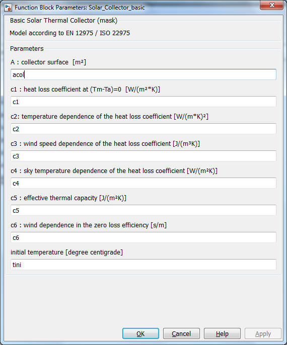

Solar_Collector_basic
Path: CARNOT/Basic/Thermal_Models
Purpose:
Collector model according to ISO 22975 (former EN 12975).
Description:
The 1-node model solves the energy balance of a solar thermal collector:
mdot*cp*(Tout-Tin)/A = F'*TauAlfa*Kdir*Idir + F'*TauAlfa*Kdfu*Idfu
- c1*(Tm-Tamb) - c2*(Tm-Tamb)2 - c3*v_wind*(Tm-Ta) - c6*v_wind Iglb
+ c4*(ELongwave - sigmaSB*(Tamb+273.15)4) - c5*dTm/dt
with
Tm = (Tin+Tout)/2
Often in test reports the optical efficiency or conversion factor eta0 is given.
The correlation for F'*TauAlfa is:
eta0 = F'*TauAlfa * (Kdir(15°)*0.85 + Kdfu*0.15)
or
F'*TauAlfa = eta0 / (Kdir(15°)*0.85 + Kdfu*0.15)
The incidence angle modifier Kdir is dependant on the angle teta(L) and teta(T).
Kdir = Kb(L)*Kb(T)
where Kb(L) and Kb(T) are given in lookup-tables in dependancy of
teta(L) and teta(T).
| Symbol | Used for | Unit |
| A | collector aperture area (or absorber area, depending on the referenced parameters c1...c6) | m2 |
| c1 | linear heat loss coefficient (at Tm-Ta = 0) | W/m2/K |
| c2 | temperature dependence of the heat loss coefficient | W/m2/K2 |
| c3 | wind speed dependence of the heat loss coefficient | J/m3/K |
| c4 | sky temperature dependence of the heat loss coefficient | - |
| c5 | effective thermal capacity | J/m2/K |
| c6 | wind dependence in the zero loss efficiency | s/m |
| eta0 | optical collector efficiency | - |
| F' | collector fin efficiency factor | - |
| TauAlfa | effective transmittance-absorptance product for direct solar radiation at normal incidence | - |
| teta | incidence angle of the direct radiation on the collector | ° |
| teta(L) | incidence angle for direct solar radiation, incidence angle in the longitudinal plane (vertical to collector header, parallel to collector riser) | ° |
| teta(T) | incidence angle for direct solar radiation, incidence angle in the transversal plane (parallel to collector header, vertical to collector riser) | ° |
| Tm | mean collector node temperature | °C |
| Tamb | ambient temperature | °C |
| v_wind | wind velocity | m/s |
| ELongwave | longwave irradiance with wave length > 3000 nm (set to -100 W/m²) | W/m2 |
| Iglb | global solar radiation on the collector plane | W/m2 |
| Idfu | diffuse solar radiation on the collector plane | W/m2 |
| Idir | direct solar radiation on the collector plane | W/m2 |
| Kb(L) | incidence angle modifier for direct solar radiation, incidence angle in the longitudinal plane (vertical to collector header, parallel to collector riser) | - |
| Kb(T) | incidence angle modifier for direct solar radiation, incidence angle in the transversal plane (parallel to collector header, vertical to collector riser) | - |
| Kdir | incidence angle modifier for direct solar radiation | - |
| Kdfu | incidence angle modifier for diffuse solar radiation | - |
| sigmaSB | Stefan-Boltzmann constant (= 5.67e-8 W/m2/K4) | W/m2/K4 |
Input:
| solar | : | vector with: [absorbed solar radiation, global radiation, ambient temperature, wind velocity, sky temperature for longwave radiation] |
| THB | : | entering Thermo Hydraulic Bus |
Output:
| Tout | : | outlet temperature in °C |
| Tm | : | mean collector temperature in °C |
| Qdot | : | thermal power of the collector in W |
Parameters and Dialog Box:

Characteristics:
| Direct Feedthrough | : | Yes |
| Sample Time | : | Inherited from driving block |
| Vectorized | : | No |